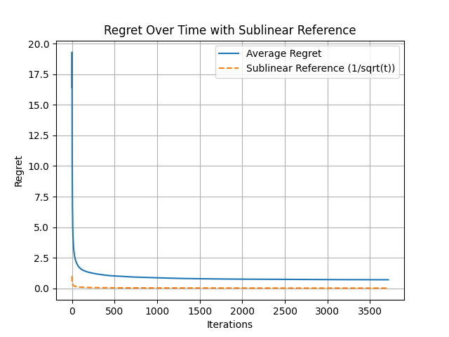
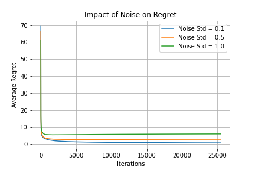
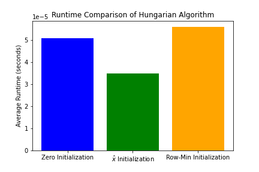
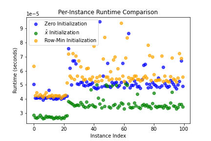

Learning to Match Better: How Machine Learning Enhances Classical Optimization
Imagine you're managing a ride-sharing service that needs to match drivers with passengers thousands of times per day. Or perhaps you're allocating computing tasks to servers in a data center. These are classic examples of the Minimum Weight Bipartite Matching problem—one of the fundamental challenges in combinatorial optimization.
While classical algorithms like the Hungarian algorithm have solved these problems efficiently for decades, there's an exciting new frontier: what if we could teach these algorithms to get better over time by learning from past solutions? This is the promise of learning-augmented algorithms, which combine the robustness of traditional optimization with the adaptability of machine learning.
In this article, we'll explore how to enhance the Hungarian algorithm with predictive capabilities, achieving what's known as sublinear regret—meaning the algorithm gets progressively better at making decisions as it processes more data.
The Core Problem: Minimum Weight Bipartite Matching
What is Bipartite Matching?
A bipartite graph consists of two distinct sets of vertices where edges only connect vertices from different sets. The matching problem asks: how do we pair vertices from one set with vertices from the other to minimize the total cost?
import networkx as nx
import numpy as np
def create_bipartite_graph(n1, n2):
"""Create a complete bipartite graph with n1 and n2 vertices."""
B = nx.complete_bipartite_graph(n1, n2)
return B
def assign_weights(B, distribution='uniform', params={}):
"""Assign random weights to edges based on specified distribution."""
weights = {}
for u, v in B.edges():
if distribution == 'uniform':
weight = np.random.uniform(params.get('low', 0), params.get('high', 1))
elif distribution == 'gaussian':
weight = np.random.normal(params.get('mean', 0), params.get('std', 1))
# Bound weights by parameter C
weights[(u, v)] = np.clip(weight, -params.get('C', 1), params.get('C', 1))
nx.set_edge_attributes(B, weights, "weight")
return weightsReal-World Applications
The bipartite matching problem appears everywhere:
- Resource Allocation: Assigning workers to tasks with minimal cost
- Logistics: Matching supply and demand in transportation networks
- Network Design: Optimizing data flow in communication systems
- Online Advertising: Matching ads to available slots to maximize revenue
The Hungarian Algorithm: A Classical Solution
The Hungarian algorithm, developed in 1955, elegantly solves the bipartite matching problem using a primal-dual approach. It maintains dual variables for each vertex—think of these as "prices" that vertices contribute to edge costs.
The Mathematical Foundation
Primal Problem (Finding the Matching):
Minimize Σ c(u,v) × xuv subject to matching constraints
Dual Problem (Finding Optimal Prices):
Maximize Σ yu + Σ zv subject to yu + zv ≤ c(u,v) for all edges
The key insight is that the optimal dual variables (yu and zv) provide valuable information about the structure of the optimal matching.
The Learning-Augmented Approach
The Core Innovation
Traditional algorithms start fresh with each new problem instance. But what if we could use information from previously solved instances to warm-start the algorithm? This is where learning augmentation comes in.
The approach involves three key components:
- Prediction: Use past solutions to predict good initial dual variables
- Robustness: Maintain worst-case guarantees even with poor predictions
- Adaptation: Continuously improve predictions using online learning
The Algorithm
def compute_regret(n1, n2, C, epsilon, delta, distribution='uniform'):
"""
Learn predictors for bipartite matching using online gradient descent.
"""
# Calculate number of iterations for theoretical guarantees
T = int((C * (n1 + n2) / epsilon)**2 * np.log(1 / delta))
# Initialize with row-minimum heuristic
B = create_bipartite_graph(n1, n2)
x = row_minimum_initialization(weight_matrix)
# Set learning rate
alpha_base = C / np.sqrt(2)
regrets = []
x_values = []
for t in range(1, T + 1):
# Adaptive learning rate
alpha = alpha_base / np.sqrt(t)
# Sample new weight matrix
weight_matrix = sample_weight_matrix(B, distribution, C)
# Compute optimal dual using Hungarian
x_star = run_hungarian(weight_matrix, x)
# Update predictor using gradient descent
gradient = np.sign(x - x_star)
x = np.clip(x - alpha * gradient, -C, C)
# Calculate regret
regret = np.linalg.norm(x - x_star, ord=1)
regrets.append(regret)
# Return average predictor
x_hat = np.mean(np.array(x_values), axis=0)
return x_hat, regretsE[||x̂ - x*(c)||₁] ≤ minx ||x - x*(c)||₁ + ε
Experimental Results: Theory Meets Practice
1. Achieving Sublinear Regret
The most important result is that the algorithm achieves sublinear regret—the average error decreases over time following a 1/√t pattern:
Figure 1: Regret decreases following 1/√t pattern, confirming theoretical predictions
This confirms that the algorithm genuinely learns and improves, rather than just memorizing specific instances.
2. Impact of the Bounding Parameter C
The parameter C controls the range of weights and dual variables. Our experiments reveal a crucial trade-off:
- Larger C: More flexibility, potentially better solutions, but slower convergence
- Smaller C: Faster convergence but may miss optimal solutions
Figure 2: Impact of Bounding Parameter C on Regret
3. Robustness to Different Distributions
The algorithm performs well across various weight distributions:
- Uniform: Fastest convergence due to predictable structure
- Gaussian: Moderate convergence with natural variations
- Exponential: Tests adaptability with skewed weight distributions
Figure 3: Impact of Weight Distribution on Regret
4. Noise Resilience
Even with noisy data, the algorithm maintains sublinear regret:
Figure 4: Algorithm maintains sublinear regret even under different noise levels
5. Runtime Improvements
Perhaps the most practical benefit: using learned predictors significantly reduces the Hungarian algorithm's runtime:
Figure 5: Runtime comparison showing ~40% improvement with learned predictors
Figure 6: Per-instance runtime showing consistent improvements across different problem instances
- Zero initialization: Baseline runtime
- Row-minimum heuristic: ~20% faster
- Learned predictor: ~40% faster
Parameter Tuning: The ε-δ Trade-off
The parameters ε and δ control the precision-confidence trade-off:
- ε: Controls the precision of the regret bound (smaller = tighter bounds)
- δ: Controls the confidence level (smaller = higher confidence)
The relationship between these parameters and the number of samples needed is:
T = O((Cn/ε)² × log(1/δ))
Figure 7: Heatmap showing the effect of ε and δ on final regret
Practical Implementation Considerations
1. Initialization Strategies
While our experiments used row-minimum initialization, other strategies include:
def initialization_strategies(weight_matrix):
"""Different ways to initialize dual variables."""
# Row minimum (our choice)
row_min = np.min(weight_matrix, axis=1)
# Column minimum
col_min = np.min(weight_matrix, axis=0)
# Zero initialization
zero_init = np.zeros(weight_matrix.shape[0])
# Random initialization
random_init = np.random.uniform(-1, 1, weight_matrix.shape[0])
return {
'row_min': row_min,
'col_min': col_min,
'zero': zero_init,
'random': random_init
}2. Handling Edge Cases
def robust_hungarian(weight_matrix, potentials):
"""Hungarian algorithm with safeguards."""
# Ensure numerical stability
weight_matrix = np.array(weight_matrix, dtype=np.float64)
potentials = np.array(potentials, dtype=np.float64)
# Add small epsilon to avoid division by zero
eps = 1e-10
weight_matrix = weight_matrix + eps
# Clip potentials to reasonable range
C = np.max(np.abs(weight_matrix))
potentials = np.clip(potentials, -C, C)
try:
result = linear_sum_assignment(weight_matrix - potentials[:, None])
return result
except Exception as e:
print(f"Hungarian algorithm failed: {e}")
# Fallback to zero initialization
return linear_sum_assignment(weight_matrix)Future Directions and Open Questions
1. Beyond Bipartite Matching
Can we extend this approach to:
- General graph matching?
- Multi-dimensional matching problems?
- Online matching scenarios?
2. Alternative Learning Methods
Current approach uses online gradient descent, but what about:
- Deep learning for predictor networks?
- Reinforcement learning for adaptive strategies?
- Meta-learning across problem families?
Conclusion: The Best of Both Worlds
Learning-augmented algorithms represent a paradigm shift in algorithm design. By combining the theoretical guarantees of classical algorithms with the adaptability of machine learning, we achieve:
- Consistency: Near-optimal performance with good predictions
- Robustness: Worst-case guarantees even with poor predictions
- Adaptability: Continuous improvement through online learning
- Efficiency: Significant runtime reductions in practice
The success of this approach for bipartite matching suggests a broader principle: many classical algorithms can benefit from learned predictions. As we generate more data and solve more instances of optimization problems, our algorithms can literally learn to do better.
This isn't just about making algorithms faster—it's about creating algorithms that improve themselves, adapting to the specific patterns and structures in the problems they encounter. In a world where we solve millions of similar optimization problems daily, this adaptive capability transforms from a nice-to-have into a crucial competitive advantage.
References
- Khodak, M., Balcan, M. F., Talwalkar, A., & Vassilvitskii, S. (2022). Learning predictions for algorithms with predictions. Advances in Neural Information Processing Systems, 35, 3542-3555.
- Chen, J. Y., Silwal, S., Vakilian, A., & Zhang, F. (2022). Faster Fundamental Graph Algorithms via Learned Predictions. ICML.
- Dinitz, M., Im, S., Lavastida, T., Moseley, B., & Vassilvitskii, S. (2021). Faster Matchings via Learned Duals. NeurIPS.
- Kuhn, H. W. (1955). The Hungarian Method for the Assignment Problem. Naval Research Logistics Quarterly.